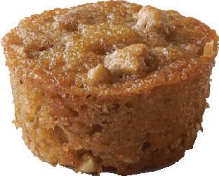
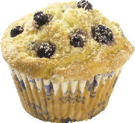

home
Welcome to my new recipe site! I will share with you some delicious recipies passed down for generations.

Per Serving (excluding unknown items):
- 273 Calories
- 20g Fat (62.4% calories from fat)
- 3g Protein
- 23g Carbohydrate
- 1g Dietary Fiber
- 75mg Cholesterol
- 126mg Sodium
Exchanges: 1/2 Grain(Starch); 0 Lean Meat; 3 1/2 Fat; 1 Other Carbohydrates.
Click the picture to visit the Pecan Pie Muffin Page to see how to make.
Per Serving (excluding unknown items):

- 185 Calories
- 10g Fat (45.9% calories from fat)
- 2g Protein
- 24g Carbohydrate
- 1g Dietary Fiber
- 13mg Cholesterol
- 218mg Sodium
Exchanges: 0 Grain(Starch); 0 Lean Meat; 0 Fruit; 2 Fat; 1 1/2 Other Carbohydrates.
Click the picture to visit the Blueberry Crunch Page to see how to make.